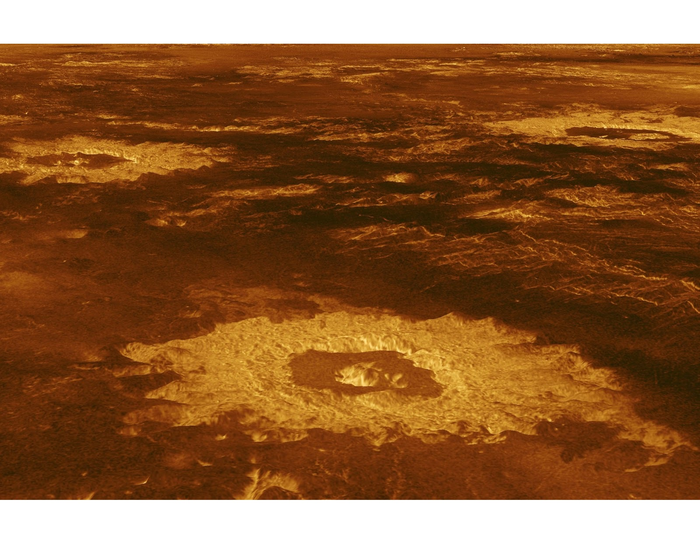

Venus is the second planet from the Sun and the sixth-largest. Together with Mercury, they are the only planets without a satellite, even though Mercury is closer to the sun, Venus is the hottest planet.
It is theorized that Venus was formed about 4.5 billion years ago when gravity pulled swirling gas and dust together to form the second planet and it later settled into its current layout.
Venus is the second closest planet to the Sun, at a distance of 108.2 million km/ 67.24 mi or 0.7 AU receiving the sun’s light in 6 minutes. Venus has a radius of 6.051 km or 3.760 miles and a diameter of 12.104 km or 7.521 mi, slightly smaller than Earth. It has a mass of 4.87 × 1024 kg, or 85% that of Earth. The mentioned similarities also give way to similar densities, Venus having a density of 5.24 grams per cubic centimeter, while Earth has 5.52. It also has a as much volume as Earth - 928.45 billion cubic km compared to Earth's 1083.21 billion. Its closest approach to Earth happens once every 584 days, when the planets catch up to one another. On average it can get as close as 25 million miles or 40 million kilometers to Earth the equivalent of about 0.28 AU.
Venus is very similar to Earth in its structure. The core is posseses is approximately 2.000 miles or 3.200 kilometers in radius. Above that core rests a mantle of hot rock, slowly churning due to the planet’s interior heat. As a result the surface is a thin crust of rock that bulges and moves as Venus’s mantle shifts, and creates volcanoes. Its core is at least partially liquid since both Venus and Earth started cooling at about the same rate. Due to its smaller size, it is estimated that Venus’s pressure is about 24% lower in its deep interior. About 80% of the Venusian surface is covered by smooth, volcanic plains, consisting of 70% plains with ridges and 10% smooth or lobate plains. Venus does contain two highland “continents” that make up the rest of its surface area. One is located in the planet’s northern hemisphere and it is called Ishtar Terra after Ishtar, the Babylonian goddess of love, and it is about the size of Australia.
Venus has a retrograde rotation, moving in the opposite direction than most planets, only Uranus also does this. They both move from East to West, clockwise. Venus does this rotation once every 243 Earth days, having the slowest rotation out of all the planets in the solar system. This slow rotation also influences its shape, making Venus very spherical. One Venusian day is longer than one Venusian year – 225 Earth days. As a comparison, Venus’s equator rotates at 6.52 km/h while Earth’s rotates at 1,674.4 km/h. It has been observed that it’s even getting slower. In 16 years between the Magellan spacecraft and Venus Express visits, the rotation of Venus has slowed down up to 6.5 minutes in that time span.
Theories suggest that Venus might once have had a moon, which formed after a collision. After this, a second collision occurred that shattered the moon. It is believed that even this moon actually collided into Venus thus its unusual rotation.